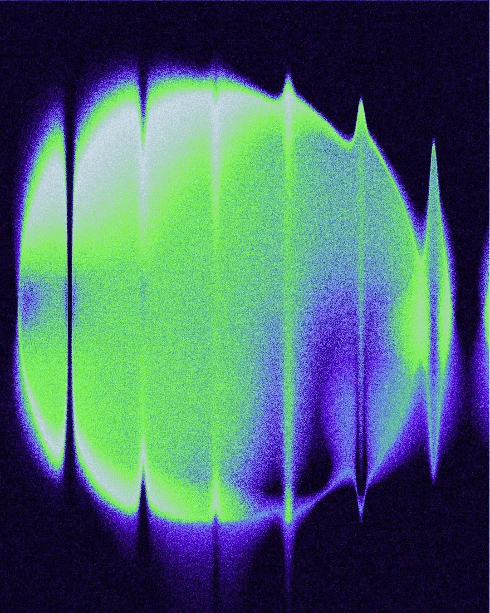
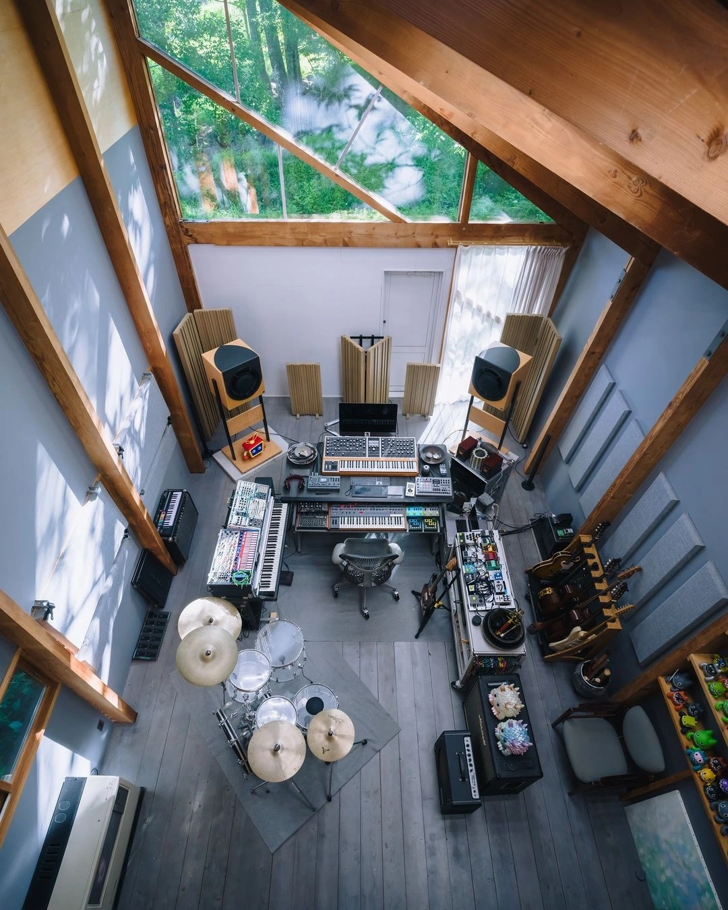

We are listeners first.
aURRA was born out of a simple conviction: that sound shapes experience more profoundly than almost anything else — and most brands treat it as an afterthought. Founded in 2026 in Porto, we are a small team of music directors, sound designers, and cultural researchers. We work at the intersection of music theory, brand strategy, and spatial experience — helping organizations discover and articulate the voice they didn't know they had. Our clients range from independent hotels and fine dining restaurants to international retail brands and arts institutions. What they all share is a belief that atmosphere is not decoration — it is architecture.
Philosophy
We believe sound is never neutral. Every space, every brand, every product already carries a frequency — our job is to find it, shape it, and make it unmistakably yours.


Our Story
Founded in 2026 in Porto, aURRA began as a small collective of music directors and sound designers determined to give brands a voice beyond the visual.